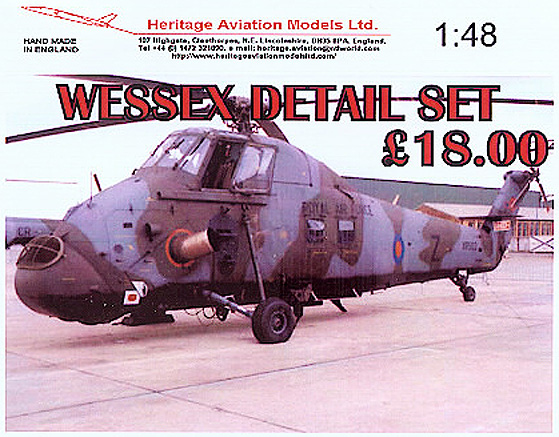
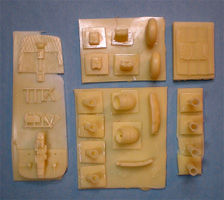
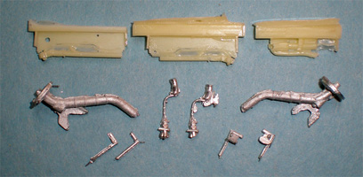
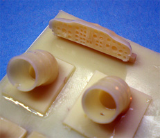

{kind=link}
{kind=link}
{kind=link}


Heritage Aviation Models Ltd. 1/48 Wessex Detail Set
Kit #48062 MSRP $27.83
Images and text Copyright © 2009 by Matt Swan
 I think that one of those highly sought after 1/48 plastic model kits is the old Revell H-34D/G kit followed by the S-58 Wessex kit. Both have been out of production for so many years I’ve lost count and both suffer from that 1970s industry standard of raised panel lines and heavy handed raised rivets. Both kits have grossly inaccurate and poorly detailed interiors for not only the cockpit but also the main cabin. Neither bears any resemblance, interior wise, to the real thing yet still modelers will pay a premium to own one and I am no exception.
The Meteor Productions and Cutting Edge name tags are familiar to most any advanced modeler and we all were sorrow to see the shop close but prior to that sudden and unexpected demise Cutting Edge had produced a detail set aimed specifically at the H-34 that corrected most of the interior issues and some of the exterior issues. Since the S-58 Wessex was essentially a turbine powered version of the H-34 (most notable difference was the extended snout to house the turbine) most of the Cutting Edge detail set could be used on this kit as well. Unfortunately the detail set went out of production a few years before the demise of Cutting Edge and is most likely a rarer find than either one of the kits.
In 2009 Heritage Aviation Models Ltd. located in North East Lincolnshire, England released a new resin and white metal detail package for the Wessex in 1/48 scale. The detail set arrives in a sturdy plastic sandwich style bubble pack with a nice print of an RAF Wessex and five pages of assembly instructions folded up inside. The parts appear to be fairly secure within the bubble and mine were free of shipping damage. Inside the bubble we have a collection of twenty six light tan resin pieces that all appear to be pulled from single part molds. The resin is very soft and pliable, especially with some of the smaller pieces. I’m not sure if this is simply because they were cast only a few days ago or what. Surface detail looks pretty good on most of the parts however on the seats it is very soft. One seat back shows a very faint image of a single shoulder strap and the other has none at all. The seat bottoms lost all seatbelt and cushion detail.
The instrument panel face and center consol have an excellent level of detail. Sadly the back side of the main instrument panel is completely devoid of detail. On the actual aircraft you should be able to see some of the instrument backings through the wind screen. The overhead consol has very little detail. Bulkheads, wheels and exhaust plumbing are all very nice with the exception of two large bubbles in the main turbine exhaust which can be seen in the image below right. Due to the very fine construction of these parts repair will be a delicate operation. In addition to these resin details we gat a small package of eight white metal parts including two sturdy main landing gear struts. The cyclic controls are provided in white metal and look very much in scale for the model. Also included here are rudder pedals for the pilot and co-pilot and feature the correct configuration for each crew position. There are some optional exhaust parts which allow the modeler to build any one of eight variations of the S-58 ranging from the Queen’s Flight aircraft to the HAS3 OOB.



You may click on these images to view larger pictures.
Instructions
The detail set includes a five page instruction packet that begins with a comprehensive inventory of all the parts along with a parts map. There are two detail shots of the kit fuselage illustrating the areas that need to be cleaned up, thinned out or simply shaved off to accommodate the upgrade set and there are templates for making new floor and ceiling sections. The modeler gets a full page of written instructions that when considered carefully along with a moderate dose of reference material will allow for a successful build.
Conclusions
I have several H-34 and Wessex kits in the stash and when Cutting Edge closed up shop I was resigned to building my own detail sets, that is until Heritage Aviation released this set. I can’t help but compare this to the original CE set though and while it is certainly better than what the Revell kits have to offer it is not quite up to par with that older set. It does offer more options than the CE kit but it lacks in detail on the seats, the main IP back and the overhead consol. All these things can be dealt with by adding some aftermarket seatbelts and scratch building a little more detail where needed. While the set does not seem to suffer from any micro bubbles there are a couple of really nasty bubbles in bad places, this has to be laid at the feet of quality control and not the maker of the masters. Even with these short comings I still have to give this upgrade set a good recommendation.